Lecciones de circuitos eléctricos - Volumen IV
Capítulo 15
ALMACENAMIENTO DIGITAL (MEMORIA)
- Why digital?
- Digital memory terms and concepts
- Modern nonmechanical memory
- Historical, nonmechanical memory technologies
- Read-only memory
- Memory with moving parts: "Drives"
Why digital?
Aunque muchos libros de texto ofrecen buenas introducciones a la tecnología de la memoria digital, mi intención es que este capítulo sea único al presentar tecnologías pasadas y presentes con cierto grado de detalle. Si bien muchos de estos diseños de memoria están obsoletos, sus principios fundamentales siguen siendo bastante interesantes y educativos, e incluso pueden encontrar una nueva aplicación en las tecnologías de memoria del futuro.
El objetivo básico de la memoria digital es proporcionar un medio para almacenar y acceder a datos binarios: secuencias de unos y ceros. El almacenamiento digital de información tiene ventajas sobre las técnicas analógicas, al igual que la comunicación digital de información tiene ventajas sobre la comunicación analógica. Esto no quiere decir que el almacenamiento de datos digitales sea inequívocamente superior al analógico, pero aborda algunos de los problemas más comunes asociados con las técnicas analógicas y, por lo tanto, encuentra una inmensa popularidad tanto en aplicaciones industriales como de consumo. El almacenamiento de datos digitales también complementa bien la tecnología de computación digital y, por tanto, encuentra una aplicación natural en el mundo de las computadoras.
La ventaja más evidente del almacenamiento de datos digitales es la resistencia a la corrupción. Supongamos que íbamos a almacenar un dato sobre la magnitud de una señal de voltaje mediante la magnetización de un pequeño trozo de material magnético. Dado que muchos materiales magnéticos retienen muy bien su fuerza de magnetización con el tiempo, este sería un medio lógico candidato para el almacenamiento a largo plazo de estos datos en particular (de hecho, así es precisamente como funciona la tecnología de cintas de audio y video: una cinta plástica delgada está impregnada con partículas de material de óxido de hierro, que puede magnetizarse o desmagnetizarse mediante la aplicación de un campo magnético desde una bobina electromagnética. Luego, los datos se recuperan de la cinta moviendo la cinta magnetizada más allá de otra bobina de alambre, los puntos magnetizados en la cinta inducen voltaje en esa bobina, reproduciendo la forma de onda de voltaje utilizada inicialmente para magnetizar la cinta).
Si representamos una señal analógica por la fuerza de la magnetización en puntos de la cinta, el almacenamiento de datos en la cinta será susceptible al más mínimo grado de degradación de esa magnetización. A medida que la cinta envejece y la magnetización se desvanece, la magnitud de la señal analógica representada en la cinta parecerá ser menor que cuando grabamos los datos por primera vez. Además, si algún campo magnético espurio altera la magnetización de la cinta, aunque sea solo en una pequeña cantidad, esa alteración de la intensidad del campo se interpretará al reproducirla como una alteración (o corrupción) de la señal que se grabó. Dado que las señales analógicas tienen una resolución infinita, el más mínimo grado de cambio tendrá un impacto en la integridad del almacenamiento de datos.
Sin embargo, si usáramos esa misma cinta y almacenáramos los datos en forma digital binaria, la fuerza de magnetización en la cinta caería en dos niveles discretos: "alto" y "bajo", sin estados intermedios válidos. A medida que la cinta envejecía o quedaba expuesta a campos magnéticos espurios, esos mismos lugares de la cinta experimentarían una ligera alteración de la intensidad del campo magnético, pero a menos que las alteraciones fueranextremo, no se producirán daños en los datos al reproducir la cinta. Al reducir la resolución de la señal impresa en la cinta magnética, hemos obtenido una inmunidad significativa al tipo de degradación y "ruido" que normalmente afecta a los datos analógicos almacenados. Por otro lado, nuestra resolución de datos estaría limitada a la velocidad de escaneo y la cantidad de bits emitidos por el convertidor A/D que interpretó la señal analógica original, por lo que la reproducción no sería necesariamente "mejor" que con la analógica, simplemente más robusta. Sin embargo, con la tecnología avanzada de los A/D modernos, la compensación es aceptable para la mayoría de las aplicaciones.
Además, al codificar diferentes tipos de datos en esquemas numéricos binarios específicos, el almacenamiento digital nos permite archivar una amplia variedad de información que a menudo es difícil de codificar en forma analógica. El texto, por ejemplo, se representa con bastante facilidad con el código binario ASCII, siete bits por cada carácter, incluidos signos de puntuación, espacios y retornos de carro. De la misma manera, se codifica una gama más amplia de texto utilizando el estándar Unicode. Cualquier tipo de datos numéricos se puede representar mediante notación binaria en medios digitales, y cualquier tipo de información que se pueda codificar en forma numérica (¡que casi cualquier tipo puede!) también se puede almacenar. Se pueden emplear técnicas como la paridad y la detección de errores de suma de comprobación para proteger aún más contra la corrupción de datos, en formas a las que lo analógico no se presta.
Digital memory terms and concepts
Cuando almacenamos información en algún tipo de circuito o dispositivo, no sólo necesitamos alguna forma de almacenarla y recuperarla, sino también de localizarla con precisión.dóndeen el dispositivo que sea. La mayoría de los dispositivos de memoria, si no todos, pueden considerarse como una serie de buzones de correo, carpetas en un archivador o alguna otra metáfora donde la información puede ubicarse en una variedad de lugares. Cuando nos referimos a la información real que se almacena en el dispositivo de memoria, normalmente nos referimos a ella comodatos. La ubicación de estos datos dentro del dispositivo de almacenamiento generalmente se denominaDIRECCIÓN, de una manera que recuerda al servicio postal.
Con algunos tipos de dispositivos de memoria, la dirección en la que se almacenan ciertos datos se puede recuperar mediante líneas de datos paralelas en un circuito digital (analizaremos esto con más detalle más adelante en esta lección). Con otros tipos de dispositivos, los datos se abordan en términos de una ubicación física real en la superficie de algún tipo de medio (elpistas and sectoresde discos circulares de ordenador, por ejemplo). Sin embargo, algunos dispositivos de memoria, como las cintas magnéticas, tienen un tipo de direccionamiento de datos unidimensional: si desea reproducir su canción favorita en medio de un álbum en cinta de casete, debe avanzar rápidamente hasta ese lugar de la cinta, llegando al lugar adecuado mediante prueba y error, juzgando el área aproximada mediante un contador que registra la posición de la cinta y/o por la cantidad de tiempo que lleva llegar allí desde el principio de la cinta. El acceso a los datos desde un dispositivo de almacenamiento se divide aproximadamente en dos categorías:acceso aleatorio and acceso secuencial. El acceso aleatorio significa que puede abordar de manera rápida y precisa una ubicación de datos específica dentro del dispositivo, y el acceso no aleatorio simplemente significa que no puede hacerlo. Un plato de disco de vinilo es un ejemplo de dispositivo de acceso aleatorio: para saltar a cualquier canción, simplemente coloca el brazo del lápiz óptico en cualquier ubicación del disco que desee (los discos de audio compactos hacen lo mismo, solo que lo hacen automáticamente por usted). La cinta de casete, por otro lado, es secuencial. Debe esperar para pasar las otras canciones en secuencia antes de poder acceder o abordar la canción a la que desea saltar.
El proceso de almacenar un dato en un dispositivo de memoria se llamaescribiendo, y el proceso de recuperación de datos se llamalectura. Los dispositivos de memoria que permiten tanto leer como escribir están equipados con una forma de distinguir entre las dos tareas, para que el usuario no cometa ningún error (escribir nueva información en un dispositivo cuando lo único que quería hacer es ver lo que estaba almacenado allí). Algunos dispositivos no permiten la escritura de datos nuevos y se compran "preescritos" del fabricante. Tal es el caso de los discos de vinilo y los discos compactos de audio, y en el mundo digital se suele denominar a esto comomemoria de solo lecturao ROM. Las cintas de audio y vídeo, por otro lado, pueden ser regrabadas (reescritas) o compradas en blanco y grabadas nuevas por el usuario. Esto a menudo se llamamemoria de lectura-escritura.
Otra distinción que debe hacerse para cualquier tecnología de memoria en particular es su volatilidad o permanencia del almacenamiento de datos sin energía. Muchos dispositivos de memoria electrónica almacenan datos binarios por medio de circuitos que están bloqueados en un estado "alto" o "bajo", y este efecto de bloqueo se mantiene sólo mientras se mantenga energía eléctrica en esos circuitos. Esta memoria se denominaría propiamentevolátil. Los medios de almacenamiento como discos o cintas magnetizados sonno volátil, porque no se necesita ninguna fuente de energía para mantener el almacenamiento de datos. Esto suele resultar confuso para los nuevos estudiantes de tecnología informática, porque la memoria electrónica volátil que normalmente se utiliza para la construcción de dispositivos informáticos se conoce común y claramente comoRAM (RandomAaccesoMmemoria). Si bien normalmente se accede a la memoria RAM de forma aleatoria, también lo es prácticamente cualquier otro tipo de dispositivo de memoria en la computadora. Que "RAM"en realidadse refiere es elvolatilidadde la memoria, y no su modo de acceso. Los circuitos integrados de memoria no volátil en las computadoras personales se denominan comúnmente (y propiamente) comoROM (Rleer-Only Mmemoria), pero se accede a su contenido de datos de forma aleatoria, ¡al igual que los circuitos de memoria volátil!
Finalmente, es necesario que haya una manera de indicar cuántos datos puede almacenar un dispositivo de memoria en particular. Esto, afortunadamente para nosotros, es muy simple y directo: simplemente cuente el número de bits (o bytes, 1 byte = 8 bits) del espacio total de almacenamiento de datos. Debido a la gran capacidad de los dispositivos de almacenamiento de datos modernos, los prefijos métricos generalmente se colocan en la unidad de bytes para representar el espacio de almacenamiento: 1,6 gigabytes equivalen a 1,6 mil millones de bytes, o 12,8 mil millones de bits, de capacidad de almacenamiento de datos. La única advertencia aquí es tener en cuenta los números redondeados. Debido a que los mecanismos de almacenamiento de muchos dispositivos de memoria de acceso aleatorio generalmente están dispuestos de manera que el número de "celdas" en las que se pueden almacenar bits de datos aparezca en progresión binaria (potencias de 2), lo más probable es que un dispositivo de memoria de "un kilobyte" contenga 1024 (2 elevado a 10) ubicaciones para bytes de datos en lugar de exactamente 1000. Un dispositivo de memoria de "64 kbytes" en realidad contiene 65 536 bytes de datos (2 elevado a la 16 potencia), y probablemente debería llamarse dispositivo de "66 Kbytes" para ser más precisos. Cuando redondeamos números en nuestro sistema de base 10, no estamos en sintonía con los equivalentes redondeados en el sistema de base 2.
Modern nonmechanical memory
Ahora podemos proceder a estudiar tipos específicos de dispositivos de almacenamiento digital. Para empezar, quiero explorar algunas de las tecnologías que no requieren piezas móviles. Estas no son necesariamente las tecnologías más nuevas, como podría sospecharse, aunque lo más probable es que reemplacen a las tecnologías de piezas móviles en el futuro.
Un tipo muy sencillo de memoria electrónica es el multivibrador biestable. Capaz de almacenar un solo bit de datos, es volátil (requiere energía para mantener su memoria) y muy rápido. El D-latch es probablemente la implementación más simple de un multivibrador biestable para uso de memoria, la entrada D sirve como entrada de "escritura" de datos, la salida Q sirve como salida de "lectura" y la entrada enable sirve como línea de control de lectura/escritura:
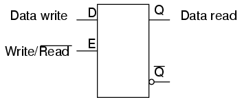
Si deseamos más de un bit de almacenamiento (y probablemente lo deseamos), tendremos que tener muchos pestillos dispuestos en algún tipo de matriz donde podamos abordar selectivamente cuál (o qué conjunto) estamos leyendo o escribiendo. Usando un par de buffers triestado, podemos conectar tanto la entrada de escritura de datos como la salida de lectura de datos a una línea de bus de datos común, y habilitar esos buffers para conectar la salida Q a la línea de datos (LEER), conectar la entrada D a la línea de datos (WRITE), o mantener ambos buffers en el estado High-Z para desconectar D y Q de la línea de datos (modo sin dirección). Una "celda" de memoria se vería así, internamente:
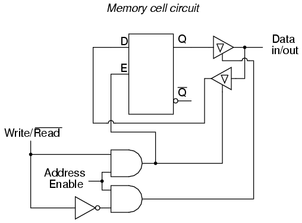
Cuando la entrada de habilitación de dirección es 0, ambos buffers triestado se colocarán en modo Z alto y el pestillo se desconectará de la línea de entrada/salida de datos (bus). Solo cuando la entrada de habilitación de dirección esté activa (1), el pestillo se conectará al bus de datos. Cada circuito de retención, por supuesto, se habilitará con una línea de entrada de "habilitación de dirección" (AE) diferente, que provendrá de un decodificador de salida 1 de n:
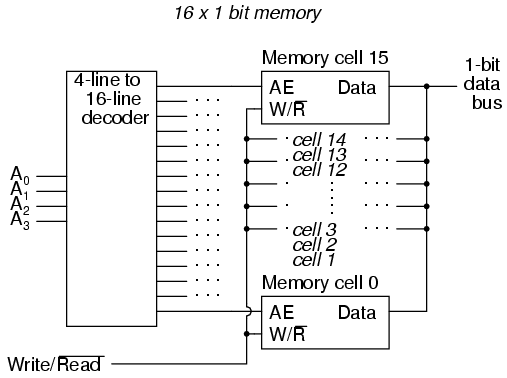
En el circuito anterior, 16 celdas de memoria se direccionan individualmente con una entrada de código binario de 4 bits en el decodificador. Si una celda no está direccionada, será desconectada del bus de datos de 1 bit por sus buffers triestado internos: en consecuencia, los datos no se pueden escribir ni leer a través del bus hacia o desde esa celda. Sólo el circuito de la celda al que se dirige la entrada del decodificador de 4 bits será accesible a través del bus de datos.
Este sencillo circuito de memoria es de acceso aleatorio y volátil. Técnicamente se le conoce comoRAM estática. Su capacidad total de memoria es de 16 bits. Dado que contiene 16 direcciones y tiene un bus de datos de 1 bit de ancho, se designaría como un circuito de RAM estática de 16 x 1 bit. Como puede ver, se necesita una cantidad increíble de puertas (¡y múltiples transistores por puerta!) para construir un circuito RAM estático práctico. Esto hace que la RAM estática sea un dispositivo de densidad relativamente baja, con menos capacidad que la mayoría de los otros tipos de tecnología de RAM por unidad de espacio de chip IC. Debido a que cada circuito de celda consume una cierta cantidad de energía, el consumo total de energía para una gran variedad de celdas puede ser bastante alto. Los primeros bancos de RAM estática en las computadoras personales consumían una buena cantidad de energía y también generaban mucho calor. La tecnología CMOS IC ha hecho posible reducir el consumo de energía específico de los circuitos RAM estáticos, pero la baja densidad de almacenamiento sigue siendo un problema.
Para solucionar este problema, los ingenieros recurrieron al condensador en lugar del multivibrador biestable como medio para almacenar datos binarios. Un pequeño condensador podría servir como celda de memoria, completo con un solo transistor MOSFET para conectarlo al bus de datos para cargar (escribir un 1), descargar (escribir un 0) o leer. Desafortunadamente, estos pequeños condensadores tienen capacitancias muy pequeñas y su carga tiende a "fugarse" a través de las impedancias del circuito con bastante rapidez. Para combatir esta tendencia, los ingenieros diseñaron circuitos internos al chip de memoria RAM que leerían periódicamente todas las celdas y recargarían (o "refrescarían") los condensadores según fuera necesario. Aunque esto aumentaba la complejidad del circuito, aún requería muchos menos componentes que una RAM construida con multivibradores. A este tipo de circuito de memoria lo llamaronRAM dinámica, debido a su necesidad de actualización periódica.
Los avances recientes en la fabricación de chips IC han llevado a la introducción dedestellomemoria, que funciona según un principio de almacenamiento capacitivo como la RAM dinámica, pero utiliza la puerta aislada de un MOSFET como condensador.
Antes de la llegada de los transistores (especialmente el MOSFET), los ingenieros tuvieron que implementar circuitos digitales con puertas construidas con tubos de vacío. Como se puede imaginar, el enorme tamaño comparativo y el consumo de energía de un tubo de vacío en comparación con un transistor hicieron que los circuitos de memoria como la RAM estática y dinámica fueran una imposibilidad práctica. Se desarrollaron otras técnicas bastante ingeniosas para almacenar datos digitales sin el uso de piezas móviles.
Historical, nonmechanical memory technologies
Quizás la técnica más ingeniosa fue la dellínea de retardo. Una línea de retardo es cualquier tipo de dispositivo que retrasa la propagación de una señal de pulso u onda. Si alguna vez ha escuchado el eco de un sonido de un lado a otro a través de un cañón o una cueva, ha experimentado una línea de retardo de audio: la onda de ruido viaja a la velocidad del sonido, rebota en las paredes e invierte la dirección de viaje. La línea de retardo "almacena" datos de forma muy temporal si la señal no se fortalece periódicamente, pero el hecho mismo de que almacene datos es un fenómeno explotable para la tecnología de memoria.
Las primeras líneas de retardo por computadora utilizaban tubos largos llenos de mercurio líquido, que se utilizaba como medio físico a través del cual las ondas sonoras viajaban a lo largo del tubo. Se montó un transductor eléctrico/de sonido en cada extremo, uno para crear ondas sonoras a partir de impulsos eléctricos y el otro para generar impulsos eléctricos a partir de ondas sonoras. Se envió un flujo de datos binarios en serie al transductor transmisor como una señal de voltaje. La secuencia de ondas sonoras viajaría de izquierda a derecha a través del mercurio del tubo y sería recibida por el transductor en el otro extremo. El transductor receptor recibiría los pulsos en el mismo orden en que fueron transmitidos:
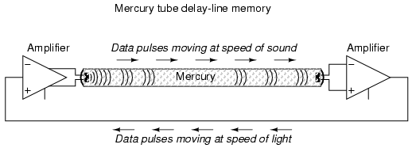
Un circuito de retroalimentación conectado al transductor receptor accionaría nuevamente el transductor transmisor, enviando la misma secuencia de pulsos a través del tubo como ondas sonoras, almacenando los datos mientras el circuito de retroalimentación continuara funcionando. La línea de retardo funcionaba como un registro de desplazamiento primero en entrar, primero en salir (FIFO), y la retroalimentación externa convertía ese comportamiento del registro de desplazamiento en un contador de anillo, haciendo circular los bits indefinidamente.
El concepto de línea de retardo sufrió numerosas limitaciones debido a los materiales y la tecnología disponibles en ese momento. La computadora EDVAC de principios de la década de 1950 usaba 128 tubos llenos de mercurio, cada uno de aproximadamente 5 pies de largo y que almacenaban un máximo de 384 bits. Los cambios de temperatura afectarían la velocidad del sonido en el mercurio, distorsionando así el retardo en cada tubo y provocando problemas de sincronización. Los diseños posteriores reemplazaron el medio de mercurio líquido con varillas sólidas de vidrio, cuarzo o metal especial que retrasaban las ondas torsionales (retorcidas) en lugar de las ondas longitudinales (a lo largo), y operaban a frecuencias mucho más altas.
Una de esas líneas de retardo utilizaba un cable especial de níquel, hierro y titanio (elegido por su buena estabilidad de temperatura) de unos 95 pies de largo, enrollado para reducir el tamaño total del paquete. El tiempo total de retardo desde un extremo del cable al otro fue de aproximadamente 9,8 milisegundos y la frecuencia de reloj práctica más alta fue de 1 MHz. Esto significaba que se podían almacenar aproximadamente 9800 bits de datos en el cable de la línea de retardo en cualquier momento dado. Dados diferentes medios para retrasar señales que no serían tan susceptibles a las variables ambientales (como pulsos de luz en serie dentro de una fibra óptica larga), este enfoque podría algún día encontrar una nueva aplicación.
Otro enfoque con el que experimentaron los primeros ingenieros informáticos fue el uso de un tubo de rayos catódicos (CRT), el tipo comúnmente utilizado en osciloscopios, radares y pantallas de televisión, para almacenar datos binarios. Normalmente, el haz de electrones enfocado y dirigido en un CRT se usaría para hacer brillar trozos de fósforo químico en el interior del tubo, produciendo así una imagen visible en la pantalla. En esta aplicación, sin embargo, el resultado deseado era la creación de una carga eléctrica en el cristal de la pantalla por el impacto del haz de electrones, que luego sería detectada por una rejilla metálica colocada directamente delante del CRT. Al igual que la línea de retraso, la llamadaTubo Williamsla memoria necesitaba ser actualizada periódicamente con circuitos externos para retener sus datos. A diferencia de los mecanismos de la línea de retardo, era prácticamente inmune a los factores ambientales de temperatura y vibración. La computadora IBM modelo 701 tenía una memoria Williams Tube con 4 kilobytes de capacidad y la mala costumbre de "sobrecargar" bits en la pantalla del tubo con reescrituras sucesivas de modo que los estados falsos "1" pudieran desbordarse a puntos adyacentes en la pantalla.
El siguiente gran avance en la memoria de las computadoras se produjo cuando los ingenieros recurrieron a materiales magnéticos como medio para almacenar datos binarios. Se descubrió que ciertos compuestos de hierro, concretamente la "ferrita", poseían curvas de histéresis casi cuadradas:
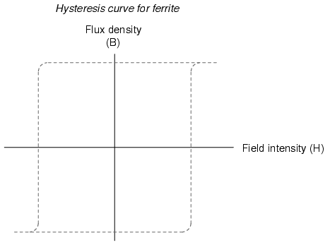
Se muestra en un gráfico con la fuerza del campo magnético aplicado en el eje horizontal (intensidad de campo), y la magnetización real (orientación de los espines de los electrones en el material de ferrita) en el eje vertical (densidad de flujo), la ferrita no se magnetizará en una dirección hasta que el campo aplicado supere un valor umbral crítico. Una vez que se excede ese valor crítico, los electrones de la ferrita "se alinean magnéticamente" y la ferrita se magnetiza. Si luego se apaga el campo aplicado, la ferrita mantiene el magnetismo total. Para magnetizar la ferrita en la otra dirección (polaridad), el campo magnético aplicado debe exceder el valor crítico en la dirección opuesta. Una vez que se excede ese valor crítico, los electrones de la ferrita "se alinean magnéticamente en la dirección opuesta". Una vez más, si luego se apaga el campo aplicado, la ferrita mantiene su magnetismo total. En pocas palabras, la magnetización de un trozo de ferrita es "biestable".
Explotando esta extraña propiedad de la ferrita, podemos utilizar este "pestillo" magnético natural para almacenar un bit binario de datos. Para configurar o restablecer este "pestillo", podemos usar corriente eléctrica a través de un cable o bobina para generar el campo magnético necesario, que luego se aplicará a la ferrita. Jay Forrester, del MIT, aplicó este principio al inventar la memoria de "núcleo" magnético, que se convirtió en la tecnología de memoria de computadora dominante durante la década de 1970.
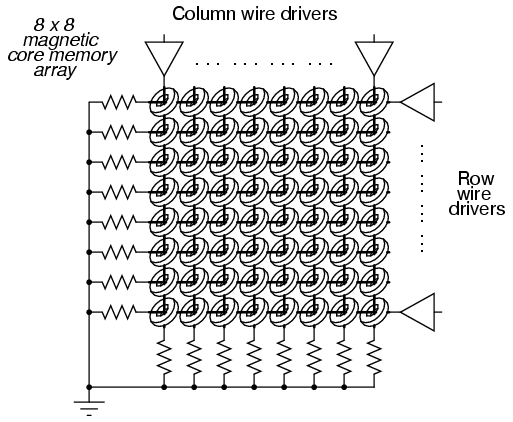
Una red de cables, aislados eléctricamente unos de otros, atravesaba el centro de muchos anillos de ferrita, cada uno de los cuales se denomina "núcleo". A medida que la corriente continua se movía a través de cualquier cable desde la fuente de alimentación a tierra, se generaba un campo magnético circular alrededor de ese cable energizado. Los valores de resistencia se establecieron de modo que la cantidad de corriente en el voltaje de la fuente de alimentación regulada produjera un poco más de la mitad de la intensidad del campo magnético crítico necesaria para magnetizar cualquiera de los anillos de ferrita. Por lo tanto, si se energizara el cable de la columna n.° 4, todos los núcleos de esa columna estarían sujetos al campo magnético de ese cable, pero no sería lo suficientemente fuerte como para cambiar la magnetización de ninguno de esos núcleos. Sin embargo, si el cable de la columna #4 y el cable de la fila #5 estuvieran energizados, el núcleo en esa intersección de la columna #4 y la fila #5 estaría sujeto a una suma de esos dos campos magnéticos: una magnitud lo suficientemente fuerte como para "establecer" o "restablecer" la magnetización de ese núcleo. En otras palabras, cada núcleo se abordó mediante la intersección de fila y columna. La distinción entre "establecer" y "reiniciar" era la dirección de la polaridad magnética del núcleo, y ese valor de bit de datos estaría determinado por la polaridad de los voltajes (con respecto a tierra) con los que se energizarían los cables de la fila y la columna.
La siguiente fotografía muestra una placa de memoria central de una computadora modelo "Nova" de la marca Data General, alrededor de finales de los años 1960 o principios de los 1970. Tenía una capacidad de almacenamiento total de 4 kbytes (eso eskilobytes, nomegabytes!). Se muestra un bolígrafo para comparar tamaños:
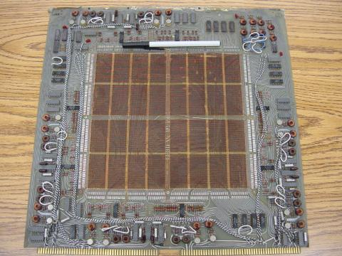
Los componentes electrónicos que se ven alrededor de la periferia de esta placa se utilizan para "conducir" los cables de la columna y la fila con corriente, y también para leer el estado de un núcleo. Una fotografía en primer plano revela los núcleos en forma de anillo, a través de los cuales pasan los cables de la matriz. Nuevamente se muestra un bolígrafo para comparar tamaños:
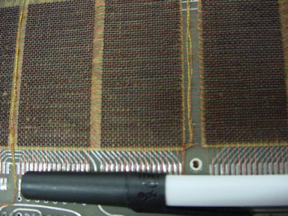
En la siguiente fotografía se muestra una placa de memoria central de diseño posterior (alrededor de 1971). Sus núcleos son mucho más pequeños y están más densamente empaquetados, lo que proporciona más capacidad de almacenamiento de memoria que la placa anterior (8 kbytes en lugar de 4 kbytes):
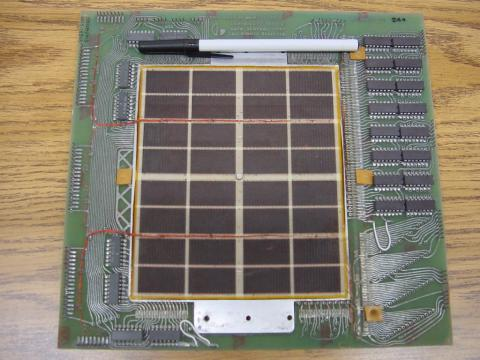
Y otro primer plano de los núcleos:
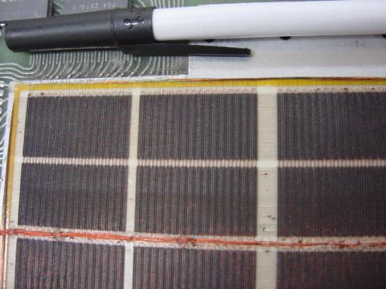
Escribir datos en la memoria central fue bastante fácil, pero leerlos fue un poco complicado. Para facilitar esta función esencial, se pasó un cable de "lectura" a travésalllos núcleos en una matriz de memoria, un extremo de la misma está conectado a tierra y el otro extremo conectado a un circuito amplificador. Se generaría un pulso de voltaje en este cable de "lectura" si el núcleo direccionadocambióestados (de 0 a 1, o de 1 a 0). En otras palabras, para leer el valor de un núcleo, había queescribirya sea un 1 o un 0 a ese núcleo y monitoree el voltaje inducido en el cable de lectura para ver si el núcleo cambió. Obviamente, si se cambiara el estado del núcleo, habría que restablecerlo a su estado original o, de lo contrario, se habrían perdido los datos. Este proceso se conoce comolectura destructiva, porque los datos pueden cambiarse (destruirse) a medida que se leen. Por lo tanto, la actualización es necesaria con la memoria central, aunque no en todos los casos (es decir, en el caso del estado del núcleonotcambia cuando se le escribe un 1 o un 0).
Una de las principales ventajas de la memoria central sobre las líneas de retardo y los tubos Williams era la no volatilidad. Los núcleos de ferrita mantuvieron su magnetización indefinidamente, sin necesidad de energía ni actualización. También era relativamente fácil de construir, más denso y físicamente más resistente que cualquiera de sus predecesores. La memoria central se utilizó desde la década de 1960 hasta finales de la de 1970 en muchos sistemas informáticos, incluidas las computadoras utilizadas para el programa espacial Apolo, las computadoras de control de máquinas herramienta CNC, las computadoras comerciales ("mainframe") y los sistemas de control industrial. A pesar de que la memoria central está obsoleta desde hace mucho tiempo, el término "núcleo" todavía se utiliza a veces con referencia a la memoria RAM de una computadora.
Mientras se inventaban las líneas de retardo, el tubo Williams y las tecnologías de memoria central, la RAM estática simple se mejoraba con tecnología de componentes activos más pequeños (tubo de vacío o transistor). La RAM estática nunca fue totalmente eclipsada por sus competidores: incluso la vieja computadora ENIAC de la década de 1950 usaba circuitos de contador de anillo de tubo de vacío para registros de datos y cálculo. Sin embargo, con el tiempo, la tecnología de fabricación de chips CI, cada vez a menor escala, dio a los transistores una ventaja práctica sobre otras tecnologías, y la memoria central se convirtió en una pieza de museo en la década de 1980.
Un último intento de lograr una memoria magnética mejor que el núcleo fue elmemoria de burbuja. La memoria de burbujas aprovechó un fenómeno peculiar en un mineral llamadogranate, que, cuando se disponía en una película delgada y se exponía a un campo magnético constante perpendicular a la película, sostenía pequeñas regiones de "burbujas" magnetizadas de manera opuesta que podían ser empujadas a lo largo de la película empujando con otros campos magnéticos externos. Se podrían colocar "pistas" sobre el granate para enfocar el movimiento de las burbujas depositando material magnético en la superficie de la película. Se formó una pista continua en el granate que dio a las burbujas un largo bucle por el cual viajar, y se aplicó fuerza motriz a las burbujas con un par de bobinas de alambre enrolladas alrededor del granate y energizadas con un voltaje bifásico. Las burbujas se podían crear o destruir con una pequeña bobina de alambre colocada estratégicamente en el camino de las burbujas.
La presencia de una burbuja representaba un "1" binario y la ausencia de una burbuja representaba un "0" binario. Los datos podrían leerse y escribirse en esta cadena de burbujas magnéticas en movimiento a medida que pasan por la pequeña bobina de alambre, de forma muy parecida a la "cabeza" de lectura/escritura de un reproductor de cintas de casete, que lee la magnetización de la cinta a medida que se mueve. Al igual que la memoria central, la memoria de las burbujas no era volátil: un imán permanente proporcionaba el campo de fondo necesario para sostener las burbujas cuando se cortaba la energía. Sin embargo, a diferencia de la memoria central, la memoria de burbuja tenía una densidad de almacenamiento fenomenal: se podían almacenar millones de bits en un chip de granate de sólo un par de pulgadas cuadradas de tamaño. Lo que acabó con la memoria de burbuja como alternativa viable a la RAM estática y dinámica fue su acceso lento y secuencial a los datos. Al no ser más que un registro de desplazamiento en serie increíblemente largo (contador de anillos), el acceso a cualquier porción particular de datos en la cadena en serie podría ser bastante lento en comparación con otras tecnologías de memoria.
Un equivalente electrostático de la memoria de burbujas es elDispositivo de carga acopladaMemoria (CCD), una adaptación de los dispositivos CCD utilizados en fotografía digital. Al igual que la memoria de burbujas, los bits se desplazan en serie a lo largo de canales en el material del sustrato mediante pulsos de reloj. A diferencia de la memoria de burbujas, las cargas electrostáticas decaen y deben actualizarse. Por tanto, la memoria CCD es volátil, con una alta densidad de almacenamiento y acceso secuencial. Interesante, ¿no? La antigua memoria Williams Tube fue adaptada de CRTvisitatecnología y memoria CCD de vídeograbacióntecnología.
Read-only memory
La memoria de sólo lectura (ROM) tiene un diseño similar a los circuitos RAM estáticos o dinámicos, excepto que el mecanismo de "enganche" está diseñado para una operación única (o limitada). El tipo más simple de ROM es el que utiliza pequeños "fusibles" que pueden quemarse selectivamente o dejarse solos para representar los dos estados binarios. Obviamente, una vez que se funde uno de los pequeños fusibles, no se puede volver a reparar, por lo que la escritura de dichos circuitos ROM es de una sola vez. Debido a que se pueden escribir (programar) una vez, estos circuitos a veces se denominan PROM (memoria programable de solo lectura).
Sin embargo, no todos los métodos de escritura son tan permanentes como los fusibles fundidos. Si se puede crear un pestillo de transistor que sólo se pueda restablecer con un esfuerzo significativo, se puede construir un dispositivo de memoria que sea una especie de cruce entre una RAM y una ROM. A este dispositivo se le da un nombre bastante contradictorio: EPROM (Memoria de sólo lectura programable y borrable). Las EPROM vienen en dos variedades básicas: borrables eléctricamente (EEPROM) y borrables por ultravioleta (UV/EPROM). Ambos tipos de EPROM utilizan dispositivos MOSFET de carga capacitiva para activarse o desactivarse. Las UV/EPROM se "eliminan" mediante una exposición prolongada a la luz ultravioleta. Son fáciles de identificar: tienen una ventana de cristal transparente que expone el material del chip de silicio a la luz. Una vez programado, debes tapar esa ventana de vidrio con cinta adhesiva para evitar que la luz ambiental degrade los datos con el tiempo. Las EPROM a menudo se programan utilizando voltajes de señal más altos que los que se usan durante el modo de "solo lectura".
Memory with moving parts: "Drives"
La primera forma de almacenamiento de datos digitales con piezas móviles fue la tarjeta de papel perforada. Joseph Marie Jacquard inventó un telar en 1780 que seguía automáticamente las instrucciones de tejido establecidas mediante agujeros cuidadosamente colocados en tarjetas de papel. Esta misma tecnología se adaptó a las computadoras electrónicas en la década de 1950, cuando las tarjetas se leían mecánicamente (contacto de metal con metal a través de los orificios), neumáticamente (aire soplado a través de los orificios, la presencia de un orificio detectada por la contrapresión de la boquilla de aire) u óptica (luz que brilla a través de los orificios).
Una mejora con respecto a las tarjetas de papel es la cinta de papel, que todavía se utiliza en algunos entornos industriales (en particular, en la industria de las máquinas herramienta CNC), donde las demandas de velocidad y almacenamiento de datos son bajas y se valora mucho la robustez. En lugar de papel de fibra de madera, a menudo se utiliza material mylar, siendo la lectura óptica de la cinta el método más popular.
La cinta magnética (muy similar a las cintas de audio o vídeo) fue la siguiente mejora lógica en los medios de almacenamiento. Todavía se utiliza ampliamente hoy en día como medio para almacenar datos de "copia de seguridad" para archivarlos y restaurarlos de emergencia para otros métodos de almacenamiento de datos más rápidos. Al igual que la cinta de papel, la cinta magnética es un acceso secuencial, en lugar de un acceso aleatorio. En los primeros sistemas informáticos domésticos, se utilizaba cinta de casete de audio normal para almacenar datos en forma modulada, los 1 y 0 binarios representados por diferentes frecuencias (similar a la comunicación de datos FSK). La velocidad de acceso era terriblemente lenta (si estuvieras leyendo texto ASCII de la cinta, ¡casi podrías seguir el ritmo de las letras que aparecían en la pantalla de la computadora!), pero era barata y bastante confiable.
La cinta tenía la desventaja de ser de acceso secuencial. Para abordar este punto débil, se construyeron "unidades" de almacenamiento magnético con medios en forma de disco o tambor. Un motor eléctrico proporcionaba un movimiento a velocidad constante. Se proporcionó una bobina de lectura/escritura móvil (también conocida como "cabezal") que se podía colocar mediante servomotores en varias ubicaciones en la altura del tambor o en el radio del disco, brindando un acceso casi aleatorio (es posible que aún tenga que esperar a que el tambor o el disco gire a la posición adecuada una vez que la bobina de lectura/escritura haya alcanzado la ubicación correcta).
La forma del disco se prestaba mejor a los medios portátiles y, por tanto, ladisco flexiblenació. Los disquetes (llamados así porque los medios magnéticos son delgados y flexibles) se fabricaban originalmente en formatos de 8 pulgadas de diámetro. Más tarde, se introdujo la variedad de 5-1/4 pulgadas, que se hizo práctica gracias a los avances en la densidad de partículas del medio. En igualdad de condiciones, un disco más grande tiene más espacio para escribir datos. Sin embargo, la densidad de almacenamiento se puede mejorar haciendo más pequeños los pequeños granos de material de óxido de hierro en el sustrato del disco. Hoy en día, el disquete de 3-1/2 pulgadas es el formato predominante, con una capacidad de 1,44 Mbytes (2,88 Mbytes en unidades SCSI). Otros formatos de unidades portátiles se están volviendo populares, con los discos "ZIP" de 100 Mbytes y "JAZ" de 1 Gbyte de IoMega que aparecen como equipo original en algunas computadoras personales.
Aún así, las unidades de disquete tienen la desventaja de estar expuestas a entornos hostiles y se las quita constantemente del mecanismo de la unidad que lee, escribe y hace girar los medios. Los primeros discos eran unidades cerradas, selladas contra todo polvo y otras partículas, y definitivamente fueronnotportátil. Mantener los medios en un ambiente cerrado permitió a los ingenieros evitar el polvo por completo, así como los campos magnéticos espurios. Esto, a su vez, permitió un espacio mucho más estrecho entre el cabezal y el material magnético, lo que dio como resultado un campo magnético mucho más enfocado para escribir datos en el material magnético.
La siguiente fotografía muestra un disco duro "plato" de aproximadamente 30 Mbytes de capacidad de almacenamiento. Se ha colocado un bolígrafo cerca de la parte inferior del plato como referencia del tamaño:
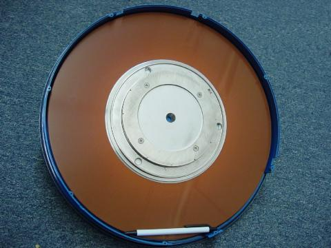
Las unidades de disco modernas utilizan múltiples platos hechos de material duro (de ahí el nombre "disco duro") con múltiples cabezales de lectura/escritura para cada plato. El espacio entre la cabeza y el plato es mucho más pequeño que el diámetro de un cabello humano. Si el entorno herméticamente sellado dentro de una unidad de disco duro se contamina con aire exterior, el disco duro quedará inservible. El polvo se acumulará entre los cabezales y los platos, provocando daños en la superficie del soporte.
Aquí hay un disco duro con cuatro platos, aunque el ángulo de toma sólo permite ver el plato superior. Esta unidad se completa con motor de accionamiento, cabezales de lectura/escritura y componentes electrónicos asociados. Tiene una capacidad de almacenamiento de 340 Mbytes, y tiene aproximadamente la misma longitud que el bolígrafo que se muestra en la fotografía anterior:
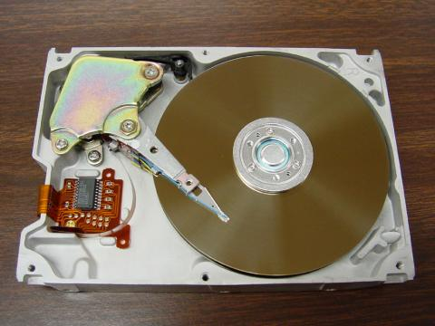
Si bien es inevitable que la tecnología de piezas no móviles reemplace a las unidades mecánicas en el futuro, las unidades electromecánicas de última generación actuales continúan rivalizando con los dispositivos de memoria no volátil de "estado sólido" en densidad de almacenamiento y a un costo menor. En 1998, se anunció un disco duro de 250 Mbytes que tenía aproximadamente el tamaño de una moneda de veinticinco centavos (más pequeño que el centro del plato metálico en el centro de la última fotografía del disco duro). En cualquier caso, la densidad y la confiabilidad del almacenamiento sin duda seguirán mejorando.
Un incentivo para el avance de la tecnología de almacenamiento de datos digitales fue la llegada de la música codificada digitalmente. Una empresa conjunta entre Sony y Phillips dio como resultado el lanzamiento al público del "disco de audio compacto" (CD) a finales de los años 1980. Esta tecnología es de sólo lectura y el medio es un disco de plástico transparente respaldado por una fina película de aluminio. Los bits binarios están codificados como hoyos en el plástico que varían la longitud de la trayectoria de un rayo láser de baja potencia. Los datos se leen mediante un láser de baja potencia (cuyo haz se puede enfocar con mayor precisión que la luz normal) que se refleja en el aluminio y llega a un receptor de fotocélula.
Las ventajas de los CD sobre las cintas magnéticas son innumerables. Al ser digital, la información es altamente resistente a la corrupción. Al funcionar sin contacto, no se produce desgaste al jugar. Al ser ópticos, son inmunes a los campos magnéticos (que pueden dañar fácilmente los datos en cintas o discos magnéticos). Es posible comprar unidades de "grabación" de CD que contienen el láser de alta potencia necesario para escribir en un disco en blanco.
Siguiendo los pasos de la industria de la música, la industria del entretenimiento en vídeo ha aprovechado la tecnología del almacenamiento óptico con la introducción delDisco de vídeo digitalo DVD. Al utilizar un disco de plástico de tamaño similar al CD de música, un DVD emplea espacios más estrechos entre los hoyos para lograr una densidad de almacenamiento mucho mayor. Esta mayor densidad permite codificar largometrajes en soportes DVD, completos con información trivial sobre la película, notas del director, etc.
Se están dedicando muchos esfuerzos al desarrollo de un disco óptico práctico de lectura/escritura (CD-W). Se ha tenido éxito en el uso de sustancias químicas cuyo color puede cambiarse mediante la exposición a una luz láser brillante y luego "leerse" con una luz de menor intensidad. Estos discos ópticos se identifican inmediatamente por sus superficies de colores característicos, a diferencia de la parte inferior plateada de un CD estándar.
Lecciones en circuitos eléctricoscopyright (C) 2000-2023 Tony R. Kuphaldt, según los términos y condiciones delCC BY License.